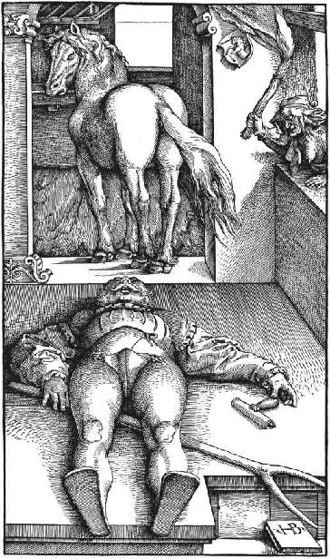
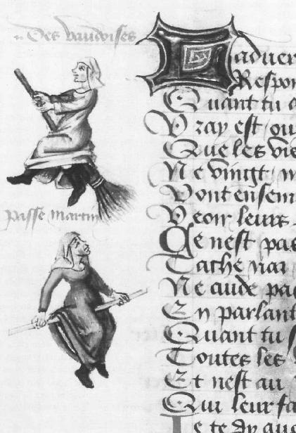
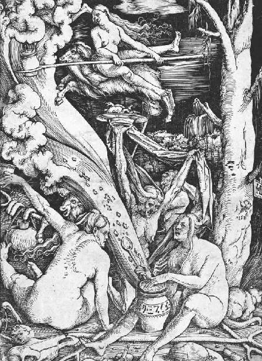

With St. Peter’s City of the Dead and the Roman catacombs checked off the itinerary, I have only one mission left in the Vatican this week. To learn the ultimate fate of the psychedelic Eucharist. If the Phocaean priestesses and the Gnostic witches helped jump-start Christianity with an injection of visionary drugs, what happened when the mystical period of paleo-Christianity came to an end? Who inherited the Ancient Greek tradition of spiked wine?
From the very beginning, when Saint Paul aired his grievances about the lethal potion in the Letter to the Corinthians, there was always a right Eucharist and a wrong Eucharist. And the Church always sided with the drug-free variety. After the fourth century AD, when the Gnostics largely went missing, Ruck charts a ping-pong battle between the Vatican and its sworn enemies. He notes “periods of suppression,” followed by revivals of “renewed heresies, no doubt neo-pagan continuations of Classical rites” that culminated in the “cults of witchcraft” during the Middle Ages and Renaissance. Long disregarded by the classicists and theologians, Ruck has tried to convince his colleagues that drugs are integral to the history of Christianity. And completely failed. Because if they don’t want to hear about the sober founders of Western civilization drinking beer laced with LSD, they probably don’t want to hear about devout Christians getting high on psychedelic wine.
And to be honest, twelve years ago, the idea struck me as pretty absurd too. A secret hallucinogenic Eucharist kept alive by a chain of heretics through the Dark Ages, until the grand witch hunts of the Inquisition wiped them off the map? Great stuff for late-night YouTubing. Less so for serious scholarship. How do you even start the fact-check? Not surprisingly, the hard scientific data in the thousand years between the fall of the Roman Empire and the Inquisition are incredibly sparse. If there are only a handful of archaeochemists looking for intoxicants in antiquity, there are even fewer studying medieval drugs. So I knew there was never going to be a Mas Castellar de Pontós or a Villa Vesuvio to support Ruck’s wild claims. What I didn’t know is that I’d wind up pacing the Vatican Museums with the world’s most interesting librarian.
After weeks on the road, Father Francis has returned to Isernia, leaving me to fend for myself behind enemy lines. Since last year, however, I’ve made some fast friends around these parts. So I’m in no danger of lunching alone. The librarian and I started the afternoon at Taverna Bavarese Franz, just a few blocks east along the Borgio Pio. To walk off the pasta carbonara and half liter of vino, we backtrack to the northeast corner of Vatican City along the imposing brick ramparts lining the Viale Vaticano. The crowds are thin this bright, early-spring Wednesday in February 2019, so getting through museum security is painless. We check our bags into storage and make our way up the escalator to the Cortile della Pinacoteca (Courtyard of the Art Gallery) for a breathtaking view of St. Peter’s dome.
To our left, the librarian points out the back wing of what has been called one of the “grandest historical collections in the world,” the impenetrable haystack of thirty-five thousand volumes of catalogue spanning fifty-three miles of shelving. Some of the dusty records date back to the eighth century AD. Right next to the Sistine Chapel and barred from public view, this mysterious repository has a reputation like none other. For Catholics and non-Catholics alike, it’s a total enigma. For conspiracy theorists, the site of the planet’s creepiest cabals and darkest plots. For my friend and professional archivist, Gianfranco Armando, it’s just the office.
The Vatican Secret Archives.
To bask a little longer in the weather, we head east into the Cortile della Pigna, appropriately named for the humongous pine cone mounted on a marble pedestal that dominates the center of a lofty niche at the northern end of this tranquil patio. In his tan jacket, gray scarf, and plaid rain hat—because the Italians love to accessorize, even when it’s not raining—Gianfranco tells me about the time he got locked in the Secret Archives’ bunker. Directly beneath us a portion of the Vatican’s fifty-three miles of classified material is stored in a two-story underground vault. The fireproof reinforced-concrete structure is climate and humidity controlled, and subject to constant security surveillance.1 There’s also an emergency lighting system, though I guess it was on the fritz that fateful day.
“To remain alone, without the lights, and no mobile signal,” says Gianfranco, laughing in retrospect, “is not a good experience, I tell you.” Though he kept his calm and eventually escaped by retracing his steps through the fixed and revolving shelving system, I don’t think Gianfranco has quite forgiven the absentminded colleague who accidently left him here in the underworld. Yet another near-death trip into the subterranean chambers of the Eternal City. But it’s par for the course. When you step foot inside the Secret Archives, you never know what to expect.
I had always wanted to take a look for myself, but had no idea where to begin. According to the Vatican’s website, no one can access the Pope’s files without first identifying the exact “archival series” of the volumes they intend to consult. A semi-impossible task, since the online Collection Index is more of a long, meaningless table of contents, available only in Italian. And it’s completely unsearchable by subject matter. There are just broad, general categories of aged documents, arranged by relatively unhelpful headings like the names of centuries-old Popes, the sites of various international delegations, and lists of random religious orders. If you’re looking for drugs, you’re fresh out of luck.
So if I wanted to fact-check Ruck’s notion that a hidden tradition of heretics trafficked in a psychedelic Eucharist for hundreds of years, long after Jesus, I needed a more creative approach. What I was really after was written evidence of the Vatican, in its own penmanship, confronting this supposed network—something that would indicate the past use of drugs in black and white. I had to identify an individual heretic whom I knew the Vatican had hunted down and snuffed out. He or she had to be particularly famous, high-profile enough to have grabbed the Church’s attention in the first place. And then historically significant enough for the Vatican to have retained a record of the scandal. No easy task. But one obvious figure kept dancing through my head. The occult wizard I’d been studying since my days at Brown. The unapologetic genius who died spectacularly for his sins.
Giordano Bruno.
The Dominican monk was born in Nola in 1548, in what was then the Kingdom of Naples in Magna Graecia. He was imprisoned by the Roman Inquisition for seven years, before they burned him at the stake in the Campo de’ Fiori in 1600.2 His crime? Among a long list of other heresies, proclaiming the “gospel of infinity” that proposed the existence of multiple earths orbiting multiple suns across the endless expanse of the cosmos.3 Earths that might contain other forms of human life, dethroning our species as God’s favorite. Four hundred years ahead of his time, the martyr for free thinking somehow foresaw the discovery of the first exoplanet by NASA’s Kepler Space Telescope in 1995.4
Bruno wasn’t the only genius who provoked the Vatican by asking big questions, of course. A few decades after the Nolan’s execution, Galileo Galilei was sentenced to house arrest for claiming the sun, not the earth, was the center of the solar system—something “false and contrary to the Holy and Divine Scriptures.”5 But the funny thing about the Father of the Scientific Method, perhaps the most famous heretic of all time, is that he wasn’t considered the most dangerous. Galileo got off much easier than Bruno, living another eleven years in the Vatican’s custody until his natural death at seventy-seven. They never sent him up in flames like the wizard from the south who died at fifty-two. And I think I know why.
A blasphemous cosmology is one thing.
A blasphemous Eucharist is another.
In his attempt “to return to the earliest centuries of Christianity” by recovering “the monuments of classical antiquity,” Bruno longed for a lost period of history that the brilliant scholar Frances Yates calls “a pure golden age of magic” based on Greek philosophy of supposed Egyptian origin.6 Like his Greek-speaking ancestors from Magna Graecia, the “Renaissance Magus” was obsessed with the same “secret doctrine” that had earlier attracted Pythagoras, Parmenides, Empedocles, and Plotinus. Not to mention all those witches—the Phocaean priestesses of Persephone and the Dionysian maenads who were crushed by the Roman senate to teach Paculla Annia a lesson. They all came from Campania. And they all seem to have been very familiar with drugs. Just like Bruno.
In De gli eroici furori (The Heroic Enthusiasts), published in London in 1585, Bruno overplayed his hand in a “curious episode” that Yates describes as “the culmination of the whole work.” It’s an allegory about nine blind men in search of the same beatific vision that beckoned the pilgrims to Eleusis for two thousand years, the “highest and final illumination” that reveals the meaning of life. The men leave the idyllic countryside of Bruno’s formative years in Campania and make a three-day pilgrimage north along the Mystery Coast Highway to Mount Circeo. It’s the very same place where Circe tends her loom on the Vergilius Vaticanus manuscript that helped Dr. Alexia Latini decipher the Homeric fresco in the Hypogeum of the Aurelii once and for all.
One of the nine cries out for Circe to brew up a “remedy” for their affliction with her “plants” (piante), “charms” (incanti), and “drugs” (veneficii).7 Bruno’s word for “drugs” is straight from the Latin veneficium, which the Lewis and Short dictionary defines as “the preparation of magic potions.” The men beg for the “magic herbs” (medicami), but Circe stands firm. Finally, she presents them with an “elixir” (liquor) containing “god-like virtue” (la virtù divina). Sealed in a vase, the magical potion guarantees a vision of two starry objects. After another decade of travel, once their initiation is complete, the men manage to open the vase, reversing their blindness and catching the promised vision of the heavenly suns. In describing the ecstasy that results from witnessing “the fairest work of God,” Bruno gets a little too close to exposing his love of the Greek Mysteries. “For a time it was like seeing so many frenzied Bacchanals (tanti furiosi debaccanti), inebriated with that which they saw so plainly.”
Once again a familiar theme: women and drugs.
Bruno was tempting fate by calling up the Vatican’s archnemeses.
If the Hypogeum of the Aurelii is evidence of the “secret doctrine,” then perhaps The Heroic Enthusiasts is too. When he invokes Circe and her drugs, is it possible Bruno is talking about a real tradition? One that found its way from ancient Campania to Renaissance Rome, thanks to the Mystery Coast Highway? It’s all part of a classical vocabulary that is completely lost on today’s readers—the “body of knowledge” that classicists Hanson and Heath said was “virtually unrecognized” in the twenty-first century. But the Inquisitors could certainly read between the not-so-subtle lines. They understood the implications of Bruno’s work for the Church in general, and the Eucharist in particular.
Look no further than the heretic’s trial records. Or the lack thereof.
The Vatican did not only want Bruno’s fresh brand of neo-paganism to disappear from the face of the earth. They also wanted any evidence of his detention, torture, and death to disappear as well. Because at some point over the past four hundred years, the original records of Bruno’s interrogation completely vanished, leaving only a fifty-nine-page summary of the many heresies with which he was accused. In 1817 that also went missing for several decades, until some assistant custodian in the 1880s chanced upon the actual sixteenth-century manuscript in one of the hidden cabinets of the Vatican’s secretary of state. At which point Pope Leo XIII ordered the records to be immediately cut off from the public. As the scholar Maria Luisa Ambrosini once remarked, “the Church realized that burning geniuses was bad for public relations.”8
Rather than classify the material and file it away for safekeeping, the presiding cardinal deliberately misplaced Bruno’s trial records among the personal archives of Leo’s predecessor, Pius IX. And there they sat until 1940, when then-prefect of the Vatican Secret Archives, Angelo Mercati, successfully tracked down the object of his obsession after an exhaustive fifteen-year hunt! For whatever reason, Mercati wanted the arch-heresy to be preserved, so he properly catalogued the original handwritten manuscript. Since World War II it has been quietly hiding in the Vatican Secret Archives. A needle in the haystack. As impressive as the collection is, it’s also “one of the most useless,” according to one recent commentator, “because it’s so inaccessible.”
Of those 53 miles, just a few millimeters’ worth of pages have been scanned and made available online. Even fewer pages have been transcribed into computer text and made searchable. If you want to peruse anything else, you have to apply for special access, schlep all the way to Rome, and go through every page by hand.
Which is exactly what I did.
But getting in wasn’t easy.
My only lead was Angelo Mercati. In 1942 the former prefect published an inflammatory book, including an Italian translation of the original Bruno manuscript, complete with footnotes and commentary. After some creative googling in the spring of 2018, I was able to tease out the specific citation for Bruno’s records, the “archival series” that the Secret Archives demands before they even consider granting permission for a random American to go sniffing through their dirty laundry. Appropriately Bruno’s records were tucked away in some “miscellaneous” section of the so-called “Armadi” files: Misc., Arm. X, 205.
With that I was ready for the formal admissions process. Which was more like an Abbott and Costello routine. I needed a letter of recommendation from a “qualified person in the field of historical research,” so I asked Ruck to pen a note on Boston University letterhead, hoping no one at the Vatican would do any creative googling of their own. Ruck kindly obliged. Under the “research topic” section of the application, I made sure to refer to Giordano Bruno as a “heretic.” A few weeks later, in May 2018, cut to me and Father Francis in the shadow of Athena’s statue in the main reading room of the Vatican Secret Archives. Before our visit to the Louvre and the catacombs over the last few days, it was our very first adventure together.
Under the watchful eye of the Greek goddess of Wisdom and the half-dozen all-male library custodians who did not take their eyes off us for a second, the priest and I scanned an ultraviolet light over the yellowed pages of the indictment against the most famous magician ever captured by the Catholic Church. We were lucky to even get hold of the seven-inch-thick volume that hit the desk like a sack of potatoes. At first I was given access only to a digital copy of the trial records saved onto an old-school CD-ROM. In order to see the physical manuscript itself, I had to fill out a one-page special request form that within minutes was personally reviewed by the current prefect in charge of the Secret Archives, His Excellency Sergio Pagano. Yes, his last name means “pagan” in Italian.
In another Abbott and Costello moment, the prefect and I went back and forth through one of the custodians, never actually seeing each other face-to-face. The nervous, confused intermediary had to make three separate trips to the prefect’s office. After my initial request, the prefect wanted to know which specific “folios,” or pages, Father Francis and I wanted to inspect. I wrote down the folios I had already reviewed in electronic form, the ones that mentioned Bruno’s “gospel of infinity” and the Eucharist. But out of left field, and for no reason whatsoever, the custodian returned with a translation of Galileo’s trial records from 1633. I furrowed my brow and held up both palms in the universal language of “What the hell is this?”
At that point the Vatican’s senior archivist, Gianfranco Armando, graciously intervened on our behalf and finally scored the elusive manuscript in question. Whenever a couple of Americans descend on the Secret Archives looking for Giordano Bruno, it arouses interest, I suppose. When one of them is an ordained priest, hushed conversations need to take place in the crypt-like cafeteria that occupies the Cortile della Biblioteca, the lush courtyard separating the Vatican Secret Archives from the Biblioteca Apostolica Vaticana, the Pope’s personal library next door.
There, over wickedly strong espresso, I let Gianfranco in on my investigation. To my astonishment God’s librarian didn’t bat an eye. The tall figure from the Piemonte region of northern Italy was instantly receptive to the quest for any textual evidence of the Vatican’s suppression of a psychedelic Eucharist. “Any research, if done seriously,” he later wrote me, “is worthy of attention.” But I was barking up the wrong tree.
Through his transparent spectacles resting on an aquiline nose, and the salt-and-pepper beard that made me think he and Father Francis shared the same barber, Gianfranco told me I would have better luck in the Archive of the Congregation for the Doctrine of the Faith. In a nice twist of irony, the so-called “archives of repression”—as historian Carlo Ginzburg has referred to them—are housed in the Palazzo del Sant’Uffizio on the other side of St. Peter’s Square. The same palace that was once the Vatican dungeon, where Bruno himself was detained for seven years. There I would find all the records of the Supreme Sacred Congregation of the Roman and Universal Inquisition. More popularly known as the Holy Office. It was only in 1998 that Pope John Paul II decided to open the contents of that archive to secular researchers. The final impenetrable haystack for the final chapter of this investigation.
In the meantime Gianfranco was right about the Bruno manuscript. Father Francis and I parsed through the archaic mix of Latin and Italian in the sixteenth-century trial summary for any explicit mention of drugs and came up empty-handed. That said, it was incredible to see firsthand how the Inquisitors described the Renaissance Magus’s “gospel of infinity”: “many worlds, many suns … even with human beings [on them]” (plures mundos, plures soles … ac etiam homines). In the passage on the Eucharist, Bruno is quoted by an informant making fun of the Most Blessed Sacrament, calling it a form of “bestiality, blasphemy, and idolatry” (bestialita, bestemie et idolatria).9 Same as today, the sixteenth-century version of the Eucharist could hardly compete with whatever inspired the house churches and catacombs of paleo-Christianity, or the Greek Mysteries long before them. And Bruno knew it.
In the wake of the Reformation, during Bruno’s lifetime, the Catholics and Protestants were actively fighting over the doctrine of transubstantiation that remains the Catholic position to this day. It says the bread and wine of the Eucharist possess some unseen and unfathomable quality that is fundamentally transformed into Jesus’s literal body and blood during the Mass, even if they appear unchanged to the untrained eye.10 According to a Pew poll from July 2019, 69 percent of self-described Catholics don’t believe a word of the Church’s core teaching.11 Instead, they see the bread and wine of the Eucharist as mere symbols of the body and blood of Jesus, and nothing more. As the writer Flannery O’Connor pointedly quipped back in 1955, “Well, if it’s a symbol. To hell with it.”12
Bruno couldn’t have agreed more.13 As a practical mystic he wanted to get back to basics. Back to the Drug of Immortality that his Greek-speaking ancestors in Campania seemed to know all about. And the kind of psychedelic lizard potion that turned up at the Villa Vesuvio, only twenty-three kilometers from Bruno’s hometown of Nola. His Eucharist was no mere symbol. And no placebo. It was an “elixir” of “god-like virtue,” spiked with the “plants,” “charms,” and “drugs” of antiquity’s most notorious Greek witch, Circe. Is that how Bruno gained his uncanny knowledge of the inexhaustible, starry universe that he accurately predicted by four centuries, and which modern cosmologists find hard to explain? Natural-born saints and seers have always reported experiences of cosmic awakening. As have those who spend a lifetime in meditation, like the Tibetan Buddhists that Father Francis studied up in the Himalayas. For the rest of us mere mortals, Bruno dropped some clues that ultimately contributed to his death. Clues about his Eucharist as a fascinating shortcut to enlightenment, the quickest way to heal our blindness to the wonder of the sublime cosmos that surrounds us. Which brings us right back to the one thing that unites every mystical tradition we have reviewed thus far.
The beatific vision.
That immediate sight of God, prompting the blind pilgrim from Eleusis to leave a timeless thank-you to Persephone for restoring his sight: the Eukrates votive relief. That strange, hallucinatory effect of Dionysus in The Bacchae, when he told his latest initiate, “Now you see as you ought to see.” Those words straight from Jesus’s mouth in John 9:39, “I am here to give sight to the blind.” And John 1:51, “I tell you for certain that you will see heaven open and God’s angels going up and down.” That very Greek concept of gnosis or intuitive knowledge that restored true sight to the Christian Gnostics. “Recognize what is before your eyes,” said the Gospel of Thomas, “and what is hidden will be revealed to you.” That “secret doctrine” that passed from Pythagoras, Parmenides, and Empedocles to Plotinus over six centuries later, when the face painted on the wall of the Hypogeum of the Aurelii wrote, “We must not look, but must, as it were, close our eyes and exchange our faculty of vision for another. We must awaken this faculty which everyone possesses, but few people ever use.”
It was this same beatific vision that brought the very concept of psychedelics into the modern world. No one had ever heard of psilocybin mushrooms until Gordon Wasson reported his mind-blowing experience with Maria Sabina in the Sierra Mazateca of Mexico. In 1957 he wrote that the fungi images were “more real to me than anything I had ever seen with my own eyes.” In language eerily similar to Bruno’s nine blind men, “inebriated with that which they saw so plainly” under the influence of Circe’s drugs, Wasson added, “I felt that I was now seeing plain, whereas ordinary vision gives us an imperfect view.” Incredibly both Bruno and Wasson compared these experiences to the Greek Mysteries.
But even more amazing is the phenomenon I find myself returning to again and again in my personal notes, completely unable to provide an explanation. All that scientific research on near-death experiences mentioned in chapter 5, where the approach to the Other Side somehow miraculously offers sight to the blind, including those blind from birth. They were found to witness the same things as sighted people with “normal, and perhaps even superior, acuity.” Not so different from the “complex hallucinations” of the blind that I tracked down in the psychedelic literature. In both experiences, the near-death and the psychedelic, encounters with dead loved ones are not unusual, providing a major clue to the power of the Christian funeral banquets that took place in the Roman catacombs. But if the blind are able to join in, then the beatific vision seems to be an expansion of consciousness that has nothing to do with the eyeballs. Or the intellect. Plotinus warned that this extraordinary “faculty of vision” which “everyone possesses, but few people ever use” could never be “acquired by calculations” or “constructed out of theorems.”14 True religion, as Parmenides tried to teach Plato long ago from Velia, has nothing to do with logic, reason, or reflective thought.
To get the beatific vision, you have to die for it.
The ego has to be destroyed. At least for a little while. Whether it’s a few minutes or a few hours or a few days, it doesn’t take very long. But everything you thought you knew about life—everything—has to be annihilated. It makes no sense, but it’s what the mystics have been saying all along. There is no way around it. It is the sole piece of advice rendered at St. Paul’s Monastery on Mt. Athos in Greece, hanging right there in the reception room: “If you die before you die; you won’t die when you die.” What does not go advertised in Christianity today is the important footnote that Bruno sacrificed his life to record for posterity: “To hell with placebos. Drugs welcome.”
If Bruno was anything like his Greek ancestors from Campania, he earned the right to scoff at a watered-down Eucharist in those few but telling lines I read in the beaten manuscript under ultraviolet light. While the staff of the very institution that put him to death stared at me and Father Francis with utter bafflement. In 2000 Pope John Paul II issued a general apology for the use of violence against the likes of Bruno.15 The Vatican’s four-century grudge against the revolutionary was soon clarified by Cardinal Angelo Sodano, however, who ultimately defended the Inquisitors for condemning that particular heretic from Magna Graecia in an effort to “serve freedom” and “promote the common good.”16 Could the bad blood have anything to do with the fact that Bruno and his Eucharist still represent an existing threat? One that could render all the doctrine, dogma, and bureaucracy of the Vatican absolutely superfluous?
If Bruno’s original trial records hadn’t conveniently gone missing, we might know more. Then again, the Secret Archives wouldn’t be the Secret Archives. If there’s one thing the Vatican has learned as the longest-running institution in the world, it’s how to cover its tracks. The “bishop’s factory,” as one journalist refers to it, knows better than to leave a paper trail. The Church of the last thousand years has been described as “a mix of bureaucracy, social mobility, and informal networks” where “not everything is written down.”17 In the deep ink-and-quill history of the Vatican, the information retention policy has always maintained a certain medieval flair. So I’m up against the world champions here.
Which is why, ever since last year, I made sure to keep in touch with God’s librarian. If anybody knew how to navigate the Pope’s archives, it was my new friend from Piemonte. If he could find his way out of the Secret Archives’ two-story vault in the pitch black, he could help me find the original Eucharist.
Gianfranco and I saunter farther east off the Cortile della Pigna. We hang a sharp left and scale the twenty-four steps to the outdoor octagonal courtyard of the Pio Clementino collection, the best place in the Vatican Museums to see some familiar faces. On the right-hand side of the antechamber leading to the Sala delle Muse (Hall of the Muses), clear as can be, is an ivy-crowned Bacchus with a bunch of grapes dangling from his left hand. He’s intently staring into the bottom of the cup in his right hand. He’s wondering what the Vatican has done with his pharmakon.
So am I.
For the past many months, I’ve been obsessing over Bruno’s use of the word veneficii (drugs) in The Heroic Enthusiasts. If he was talking about a real tradition from Campania, I needed to establish all the specifics. So I went back to square one and used the one piece of hard data I had uncovered as my starting point, the psychedelic lizard potion from the Villa Vesuvio. A lizard wine spiked with opium, cannabis, white henbane, and black nightshade was a great, if confusing, lead. And it soon paid off.
By the Renaissance the Latin term that Bruno used for the Greek pharmakon was especially associated with the kind of witch, sorceress, or medicine woman, the venefica, whom the Inquisition was targeting for their forbidden knowledge of psychotropic substances. Just after Bruno’s birth in 1548, even the Pope’s own team was talking about drugs. Trained as a pharmacologist and botanist, Andrés Laguna was the personal physician to Pope Julius III. He spent years poring over the original Greek codices of Dioscorides’s Materia Medica that had survived since the first century AD. His translation of antiquity’s magnum opus was released in Latin and Italian in 1554 by the same publishing house in Venice that made the Father of Drugs a household name all over Europe. Laguna’s Materia Medica was reprinted seventeen times to a large following in Italy, mainly because of his running commentary and anecdotes that accompanied the text. They provide an exceptional window onto the Renaissance experience with drugs in Bruno’s lifetime. And importantly, they show that Bruno’s fabulous tale about Circe and drugs was rooted in a very dangerous and apparently very real concoction: the witches’ ointment.
In his discussion of the notorious unguent that witches were said to lather on their bodies and broomsticks to carry them off to satanic meetings in the woods, Laguna identified the ingredients that turned up during one of the Church’s search and seizure operations:
among other things in the abode of said witches was a jar half-filled with a certain green ointment, made of white poplar with which they anointed themselves. Its odor was heavy and offensive, proving that it was composed of herbs, cold and soporiferous in the ultimate degree, such as hemlock, black nightshade, henbane, and mandrake.” 18
Between the black nightshade (Solanum nigrum) and henbane (Hyoscyamus spp.), it’s a fascinating clue that potentially connects the paleobotanical find from the Villa Vesuvio with Bruno’s mention of the veneficii (drugs) that produced the beatific vision. But what does any of it have to do with broomsticks flying through the air?
Well, the witches never flew anywhere, of course. As discussed in our examination of the nightshade beers in ancient Iberia, the family of plants that includes black nightshade and henbane is widely known for provoking delirium, intense hallucinations, and unearthly out-of-body travel.19 Even the early commentators knew that witches “do not leave their homes,” rather, “the devil enters them and deprives them of sense, and they fall as dead and cold.”20 That’s exactly what happened to one guinea pig who was prescribed the witches’ ointment to cure her insomnia. Laguna recorded the woman’s reaction to regaining consciousness after a full thirty-six hours: “Why did you wake me at such an inopportune time? I was surrounded by all the delights of the world.”21

The Bewitched Groom woodcut by German artist Hans Baldung, created around 1544. Entranced by the witch, the central figure is “as dead and cold”—locked in a temporary state of mind-altering paralysis.
It certainly sounds like the beatific vision.
Indeed anyone who sampled one of the witches’ magical elixirs might enjoy the same psychedelic journey, as amusingly captured by Hans Baldung’s 1544 woodcut The Bewitched Groom. In the middle of his chores, the stable boy has fallen down “as dead and cold,” overcome by whatever charm the sorceress in the window has just cooked up.22 The art historian Walter Strauss believes the forked pole that just fell from the man’s hand was used to hold a bowl or cauldron over the fire—the kind of vessel that witches customarily used for “mixing, heating, and storing potions, which were intended to be imbibed, rubbed into the skin in the manner of an ointment, or inhaled as incense.”23 Once again the motif is strangely reminiscent of the Near Eastern marzeah, which the scholar Gregorio del Olmo Lete described as a “cataleptic state of trance” induced by wine; or the Phocaean practice of incubation, which Peter Kingsley described as a “cataleptic” journey into a “world beyond the senses” where “space and time mean nothing.”
So if Bruno was privy to a real pharmacological tradition in the sixteenth century, how did it get from ancient Campania to Renaissance Rome? To the point where it showed up on the radar of the Pope’s physician? As I dug deeper the circumstantial evidence started piling up for Ruck’s secret chain of heretics linking the Gnostics to the witches.
If the psychedelic lizard potion from the Villa Vesuvio is evidence of a sacrament, perhaps it was smuggled along the Mystery Coast Highway from the pharmacy in Pompeii to the house churches and catacombs of Rome to serve as the heretical Eucharist of the Simonians, Valentinians, and Marcosians during the glory days of the Gnostics. In the first three hundred years after Jesus, did the likes of Aurelia Prima sneak such a Eucharist into the Hypogeum of the Aurelii, or the Greek Chapel in the Catacombs of Priscilla, or the mixing chambers in the Catacombs of Marcellinus and Peter? Maybe even right under St. Peter’s Basilica, where refrigeria could be held in the City of the Dead every single night of the year? The raw hallucinogenic material was certainly available. After the fourth century AD, what happened to that mysterious brand of exotic wine?
By all accounts it disappeared into the custody of anonymous heretics along the Mystery Coast Highway who are now lost to history.24 For the next several centuries, seekers of an alternative Eucharist in Italy might find comfort in the death cults that had fled the Roman catacombs for the Neapolitan catacombs and all the cemeteries of the rural churches. It was there that the refrigeria would continue to be celebrated—out of sight, out of mind—until the tenth century AD, when the Christian wine parties followed the cemeteries’ relocation back into the urban centers.25 For Yale scholar Ramsay MacMullen, no pagan ritual had quite the staying power of the graveyard Eucharist, which “offered to the immortal in humans, the everlasting spark or spirit of the dead.” There the Gnostic loners might find good company, “feasting, drinking, singing, dancing, and staying up through the night; the identity of joyful, even abandoned spirit.”26
They might also take refuge in the Phocaean practice of incubation that never left Magna Graecia. Across the Mediterranean many of the sacred caves and temples of Asclepius were repurposed into martyria, pilgrimage sites for the consultation of Christian saints and martyrs. But in Campania specifically, MacMullen confirms that the “age-old practice of receiving visions of deities during a night’s sleep at the shrine” was maintained in Naples, “where it was customary for priests to inquire about the suppliants’ dreams and to interpret them, and where sometimes the suppliants had to reside for weeks or months before obtaining relief.”27 Incredible as it seems, some kind of visionary Greek tradition did survive in Campania for many centuries, right where it started with Parmenides and the priestesses who succeeded him in Velia. But were women and drugs really the key to the stunning longevity of all the Christianized refrigeria and incubation rituals across medieval Italy?
Where the Gnostics failed to keep a low profile, the witches knew what they were doing. Some secured serious credentials to avoid the Vatican’s suspicion, joining the “Women of Salerno,” who would greatly influence the Medical School of Salerno along the Mystery Coast Highway south of Pompeii, just east of the Amalfi Coast on the Sorrentine Peninsula. Founded sometime in the tenth century under the guidance of Greek texts, with Latin, Hebrew, and Arabic wisdom to boot, it was the most preeminent institution of its kind. Particularly revered were the “huge collections of drug remedies.”28 It was the “only medical school in Europe that opened its doors to women,” who served on the faculty and played a vital role in the history of scientific achievement.29 Of all the places in the Old World for women with botanical expertise to redefine Western medicine, described as “a system of professional medical practice which has since prevailed in all parts of the civilized world,” it happened on the Mystery Coast Highway.
But not every witch was destined for medical school. Many would stick to the old ways. That entrenched tradition of folk medicine that had survived for generations in Italy, especially among rural populations, which had learned to take care of themselves. Part of the long-standing tradition of fierce independence and self-reliance, the evidence suggests, was a homemade Eucharist. The kind that appears to have been circulating among Greek-speaking Christians since the earliest days of the faith all over the Mediterranean, including the lethal potion at the house church in Corinth.
While the Muslims in the Holy Land kept the Vatican busy overseas, the Crusades in Europe were just as distracting. Like the twenty thousand men, women, and children who were indiscriminately slaughtered in a single day in 1209 during the Church’s so-called Albigensian Crusade against the Cathars, a group of Christian heretics in France.30 All the while, a much bigger threat was brewing just down the Mystery Coast Highway. By the 1420s the nocturnal church service known as the witches’ Sabbat was erupting all across the Italian peninsula. At the center of these diabolic “companies,” stretching from the Alps to Sicily, were encounters with otherworldly characters known as the “ladies from the outside” (donas de fuera), who had cat paws or horse hooves instead of human hands and feet. Italian women young and old were said to fly through the night on billy goats with these “mysterious female beings,” in order “to banquet in remote castles or on meadows.”31 The Sabbats were mainly local affairs. But they also had their headquarters, the holiest pilgrimage site in the world of witchcraft that drew women not just from Italy but all over the European continent. And not surprisingly, it was right in the heart of Campania.
The witches all came to the legendary walnut tree in the town of Benevento. There, they would frolic under the branches, which were sacred to the Greek goddess Artemis. They would link arms with a pack of Dionysian satyrs, as depicted on any bottle of Strega—a popular herbal liqueur named after the Italian word for “witch” and distilled in Benevento since 1860. And they would pay homage to a female divinity who went by many names: the Matron, the Teacher, the Wise Sibilla, the Queen of the Fairies.32 And the one title that Bruno himself must have heard from his hometown of Nola, just an hour southwest of Benevento.
The Greek Mistress.
Like all Sabbats the ritual in Benevento was an alternative Mass with an alternative Eucharist in honor of an alternative God. A Latin treatise from the era, the Errors of the Cathars, records the witches mixing their own “wine” during the Sabbat for the express purpose of “vilifying the Sacrament of the Eucharist and equally to dishonor it.”33 And that’s what changed everything. Because up until the 1420s the witches were just a ragtag outfit of harmless folk healers, innocently prancing naked through the forests of Italy. Pagans perhaps, but pagans the Vatican could afford to ignore when there were much bigger fish to fry, like the Muslims and the Cathars. It was only when the Eucharist got involved that the witch was promoted from nuisance to apostate, assuming the title of “Cathar,” a suddenly generic term for heretics. And that’s when she became a top priority, truly worthy of all the fire and fury of the witch hunts that, even by the most conservative estimates, resulted in ninety thousand prosecutions and forty-five thousand executions.34
“Although they pretended to be good Catholic Christians,” writes historian Karen Jolly about the many women who attended the Sabbat, “they represented the most dangerous of all enemies of the human race and the Christian Church.”35 The rationale should by now be very familiar. As we saw with the Mysteries of Dionysus and Jesus, the political and religious authorities were not worried about wine as we know it today. They didn’t care about alcohol, or even drugs per se, which were for the most part legal. It’s what the drugs did to people that mattered. In 186 BC the Roman senate hunted down Paculla Annia and her maenads because their sacrament was driving good citizens out of their minds—young men dropping everything for an ancient version of the Sabbat in the woods, wives and mothers leaving their families behind. In the second to fourth centuries AD, the growing bureaucracy of the Church stamped out the Gnostics at least in part for the same reason. The women who tasted the drugged wine of the Valentinians would never settle for the empty ritual or placebo Eucharist of the Church Fathers. They had sampled the forbidden fruit.

Two witches riding broomsticks from the Champion of the Ladies illuminated manuscript, written in 1451 by Martin Le Franc. The witches in question are called “Waldensians,” which originally referred to a group of Christian heretics in France and northern Italy. Bilia la Castagna was a member. In the fifteenth century, the legacy of her toad Eucharist would transform from simple folk magic into the kind of demonic witchcraft and heresy that was hunted down by the Inquisition.
Just like the witches with their homemade Eucharist. In The Witches’ Ointment: The Secret History of Psychedelic Magic, published in 2015, Thomas Hatsis dredges up an awesome piece of overlooked trivia. In the Cottian Alps of northern Italy in 1387, the torture of one heretic in the small town of Pinerolo resulted in stunning information about a certain Bilia la Castagna. It was revealed that the blasphemous witch was traveling around with a little phial that held a most unusual Eucharist, “a strange potion made from the emissions of a large toad and the ashes of burned hairs, [which she] mixes around a fire late at night on the Eve of the Epiphany.”36 The same Epiphany when Dionysus and Jesus debuted their miraculous wine. Hatsis notes the secretions of certain poisonous toads can contain such psychoactive compounds as bufotenine (5-HO-DMT), which is structurally similar to LSD. There’s also 5-MeO-DMT, a chemical cousin of the dimethlytriptamine (N,N-DMT) that is used in ayahuasca, the South American psychedelic brew sometimes referred to as the “Vine of the Dead.” At the “responsible dose,” anyone who drank the toad Eucharist was said to “understand all the secrets of the sect and forever question orthodox teaching.”37

The Witches woodcut by Hans Baldung, created around 1510. Like his Bewitched Groom (page 320), the forked pole or magical staff appears once again. It is carried by an airborne witch straddling a flying goat. This time, the staff cradles one of the bubbling cauldrons that was apparently used to cook up the witches’ ointment, together with other hallucinogenic incenses and potions. Another steaming cauldron appears in the foreground, in the very center of the composition. It is surrounded by three naked hags, and three more staffs. Whatever gushes from the cauldron in clouds of billowing smoke, it is the secret to the witches’ ecstatic flight.
Between the witches’ ointment, the heretical “wine,” and the toad Eucharist, the Vatican had every reason in the world to shut down the Sabbat, even if the satanic Mass was all in the witches’ heads. A fisherman’s wife from Palermo, Sicily, who once completed the supposed journey to Benevento, was later cornered by the Inquisition. “All this seemed to her to be taking place in a dream, for when she awoke, she always found herself in bed, naked as when she had gone to rest.”38 Physically these women may not have gone anywhere. But spiritually they went everywhere. And like some whirlwind visit to Oz, they saw everything. Which made the Church and its Eucharist totally obsolete.
And so in the fifteenth century, with yet another wild sacrament on the loose, history was about to repeat itself. Except this time whatever had managed to survive the Dark Ages would be eradicated, with extreme prejudice. Forever silencing the religion with no name that had refused to die ever since the Stone Age.
From May to June of 1426, the itinerant Franciscan named Bernardino of Siena delivered a series of 114 sermons right here in St. Peter’s Square, and across the Eternal City, turning rumors and hearsay about witches and drugs into a policy statement from the Vatican.39 When Bernardino first alerted the crowd to the “enchantments and witches and spells” that had taken root on Italian soil, the Romans thought he was crazy. But then he threatened to charge anybody who failed to incriminate these ugly heretics with witchcraft themselves. Soon enough many a “dog-faced old woman” (la vecchia rincagnata), as Bernardino referred to them, found herself accused and her fate in the balance.40 The witch hunts that would continue for another three hundred years abruptly came to life.41 And from the very beginning the evidence is clear that drugs were a primary concern.
In consultation with the Pope, Bernardino decided that only those suspected of the most serious crimes would be brought to justice that summer, which is how the poor venefica named Finicella became the first victim in a war against women and their blasphemous pharmacopeia. She reportedly used the magical witches’ ointment to transform herself into a cat, sneaking into people’s homes at night to “suck the fresh blood” from the sixty-five children she was accused of killing.42 The active ingredients in the unguent could well have been the magical plants that were later identified by the Pope’s physician, Andrés Laguna, including the psychedelic mandrake, which Dioscorides referred to as Circeium because of its mythical use by Circe herself.43 It is connections like this that made Bruno’s fabulous tale about Circe and drugs so heretical.
Finicella was strangled to death and burned at the stake on the Campidoglio, the hilltop square designed by Michelangelo. It was a macabre event that “all of Rome went to see.”44 Together with Finicella another unnamed witch was sent up in flames as an exclamation point. Except she wasn’t lucky enough to receive the customary strangling in advance. She was burned alive in the opening act of a gendercide that was meant to strike fear into any woman who dared to taste the heretical Eucharist and run with the Greek Mistress. The leading Italian scholar on these matters, Carlo Ginzburg, has observed, “Thanks to the preachings of San Bernardino of Siena, a sect hitherto considered peripheral was discovered in Rome at the very heart of Christianity.”45
But is it possible this “sect” was there all along, from the Gnostics to the witches? That a psychedelic Eucharist was its deepest secret?
And that it counted Giordano Bruno among its ranks?
After a three-hour lunch break, and an unhurried waltz through the Vatican Museums, God’s librarian has to head back to the office. And it’s time for me to get ready for my final appointment in the Vatican at the Palazzo del Sant’Uffizio, on the other side of St. Peter’s Square, where Bruno was jailed for seven years before his gruesome death.
Before we part ways, I try to summarize the above research and Ruck’s master theory for Gianfranco. How psychedelics were the shortcut to enlightenment that founded Western civilization: first in the Eleusinian Mysteries, then in the Dionysian Mysteries. How paleo-Christianity inherited this tradition from the Ancient Greeks, later passing it to the witches of the Middle Ages and Renaissance. And how the Vatican would repeatedly suppress the original, psychedelic Eucharist to rob Christians of the beatific vision—first in Europe, and then around the world after the Catholic colonization of Africa, Asia, and Latin America. A truly global conspiracy.
The archivist from Piemonte couldn’t have spent fifteen years in the Secret Archives and not heard this kind of stuff before. Gianfranco, who has variously accused me of representing the CIA, Mossad, and the Freemasons, responds in Italian, “Credo che sia una stupidaggine pazzesca.” Which roughly translates: “I think that’s crazy-ass stupid.”
Exactly what I thought twelve years ago too.
Of course it could all just be a dazzling coincidence that the greatest Renaissance magician who ever lived was born into the same region that lured every witch in Europe to its magical stronghold in Benevento. And that when he wrote of the veneficii (drugs) that could be sourced from the Greek witch Circe after a long pilgrimage to obtain the beatific vision, it had nothing to do with the venefica (witches) who used visionary drugs to travel in spirit with the Greek Mistress amid “all the delights of the world” in what seemed like a dream. Drugs that the Vatican perceived as a heretical imitation of its own Eucharist, which it specifically convicted both Bruno and the witches of blaspheming. Drugs that were considered so unquestionably superior to the traditional Christian Eucharist, however, that the wizard and his sisters were willing to trade their lives for the “highest and final illumination” that could only be delivered by a homemade Eucharist.
It could also be a coincidence that the man from Nola and the women from Benevento came from the same Campania that Parmenides and all their Greek-speaking ancestors settled in the ancient past. The Campania that was home to more initiates of the Mysteries than perhaps anywhere else in antiquity. And the Campania that was chosen, in the opinion of Peter Kingsley, for the sole purpose of seeding Italy with the Phocaean secret of how to die before you die. A technique of entering the same “cataleptic,” death-like trance that Renaissance commentators would later ascribe to the witches who had fallen down “as dead and cold.” A technique that survived as a “secret doctrine” for many centuries thereafter, until Greek-speaking Christians started mixing their own Eucharist in the house churches and crypts.
The same initiates who, once evicted from Rome by the Church Fathers, fled to the subterranean tombs and incubation temples of Naples and surrounding Campania for many centuries more to receive “visions of deities during a night’s sleep,” in the words of Ramsay MacMullen. And that in between all these Gnostics and the witches who followed them a thousand years later were the only group of women in the entire Mediterranean who used their “huge collections of drug remedies” to redefine the very concept of Western medicine at the Medical School of Salerno. The only place in Europe that women could actually study and practice pharmacology.
And it could be a final coincidence that the drugs unearthed in the psychedelic lizard potion from the Villa Vesuvio in the Campania of AD 79 were the very same drugs named by the Pope’s drug expert in AD 1554, when Giordano Bruno was only six years old.
Yes, such coincidences are possible.
But I didn’t come here for coincidences. I came here for evidence.
Evidence that the Vatican’s war against women and drugs was real.
Evidence that has never before escaped this country. Because it was only in recent history made available to snooping eyes like mine. Very recent history, by the papal timeline. Where, in the last of the Vatican’s archives to surrender its secrets and confess its sins, I’m about to discover that the lizard never went out of style.